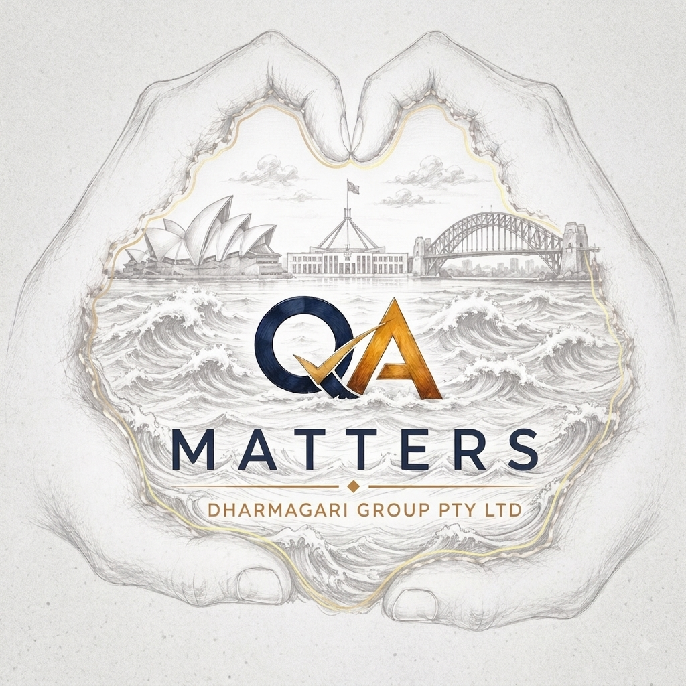

QA Matters connects businesses with skilled professionals who bring the right experience, mindset and quality to every role.

At QA Matters, we believe that the right people make the difference.
We connect organisations with skilled professionals who bring the experience, capability and mindset needed to make a real impact. At the same time, we help candidates discover opportunities where their skills are valued, their careers can grow and their contribution matters.
Our focus goes beyond simply filling positions. We take the time to understand our clients' business, their challenges, their culture and the capabilities they need. We also take the time to understand our candidates, their experience, career aspirations and the type of opportunity they are looking for. The result is a more meaningful connection between people, organisations and opportunities.
Every organisation has different requirements, and those requirements can change as projects, technology and business priorities evolve. QA Matters can help organisations access skilled professionals across a broad range of disciplines, including:
Whether you need an individual specialist, additional capability for an existing team or a larger workforce solution, we work with you to understand what you need and identify the right people.
We believe successful recruitment starts with understanding the bigger picture. Our approach combines people, capability and business understanding to help organisations build teams that can perform today and adapt for tomorrow.
We can support organisations through different stages of their workforce requirements, including:
From permanent recruitment and contract placements through to specialist resources and workforce capability, our goal is to make the process straightforward, transparent and focused on the right outcome.
Finding the right person is about more than matching a résumé to a position description. We look beyond qualifications and job titles to understand the experience, capability, cultural fit and potential contribution a candidate can bring to your organisation.
Our clients can rely on QA Matters to help:
We aim to become an extension of your team, not simply another supplier in your recruitment process.
Your career is more than your current job title. At QA Matters, we want to understand what you can do, where you want to go and what type of opportunity is right for you.
Whether you are an experienced professional looking for your next challenge, a specialist seeking a new project, or someone ready to take the next step in your career, we connect you with opportunities that align with your skills and aspirations.
We work with candidates across a wide range of professional disciplines and aim to build long-term relationships rather than simply placing people into roles.
The name QA Matters represents something bigger than quality assurance. It represents our belief that quality matters in everything we do:
We believe successful partnerships are built on trust, transparency, accountability and genuine understanding.
Our ambition is to become a trusted supplier of choice for organisations looking for people, capability and professional expertise, while becoming a trusted career partner for professionals looking for their next opportunity.
We work across government, private enterprise and growing organisations, helping them access the people and capabilities they need to achieve their goals.
We are constantly looking ahead, understanding emerging skills, changing workforce needs and evolving business requirements so that we can help our clients and candidates stay ready for what comes next.
At QA Matters, we bring the right people and the right opportunities together.
QA Matters. Where People and Opportunities Connect.
We focus on capability, culture and the practical needs of the role so businesses can hire with confidence.
Specialist talent across software, testing, automation, cloud, data, DevOps and digital delivery.
Connect with experienced testers, automation engineers, test leads and quality specialists.
Flexible professionals for project delivery, transformation programs and short or long-term engagements.
Find people who can grow with your organisation, not just fill a vacancy.
Targeted sourcing for hard-to-find skills and roles where quality matters more than volume.
A practical recruitment partner for organisations building capability and scaling teams.
It should be built into everything you do. We bring together people, technology, experience and quality to help organisations reduce risk, improve delivery and create better outcomes. Better quality. Better people. Better outcomes.
Relevant expertise
Team & culture
Proven capability
Clear communication
People first. Quality always. QA Matters is built around a simple idea: recruitment should create value for both the business and the person joining it.
From the first conversation to the final offer, we keep the process focused and human.
We learn about the role, team, technical needs and what success looks like.
We identify and engage candidates with relevant experience and genuine interest.
We validate capability, expectations, availability and alignment before presenting candidates.
We support both sides through interviews, offer and onboarding.
Tell us what you're building, the skills you need and when you need them. Let's start a conversation.